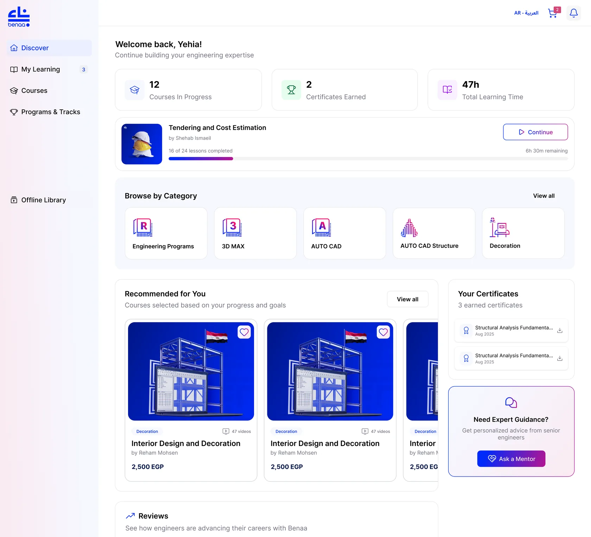
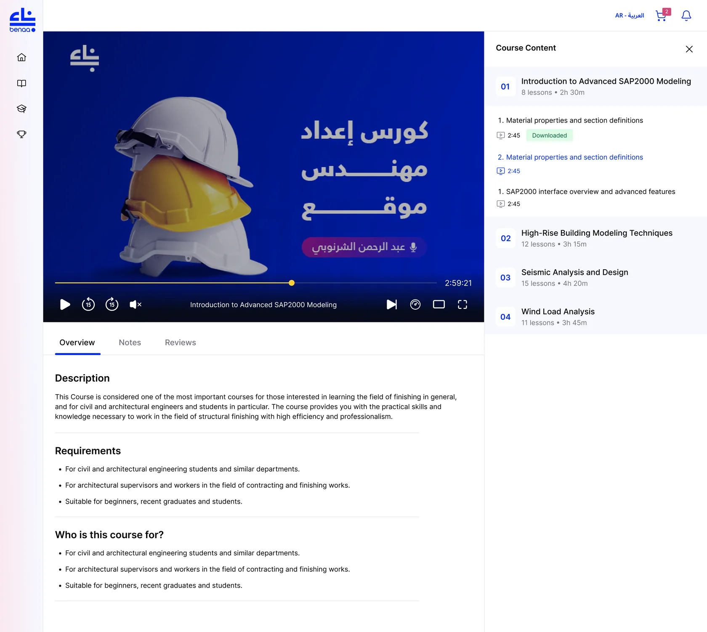
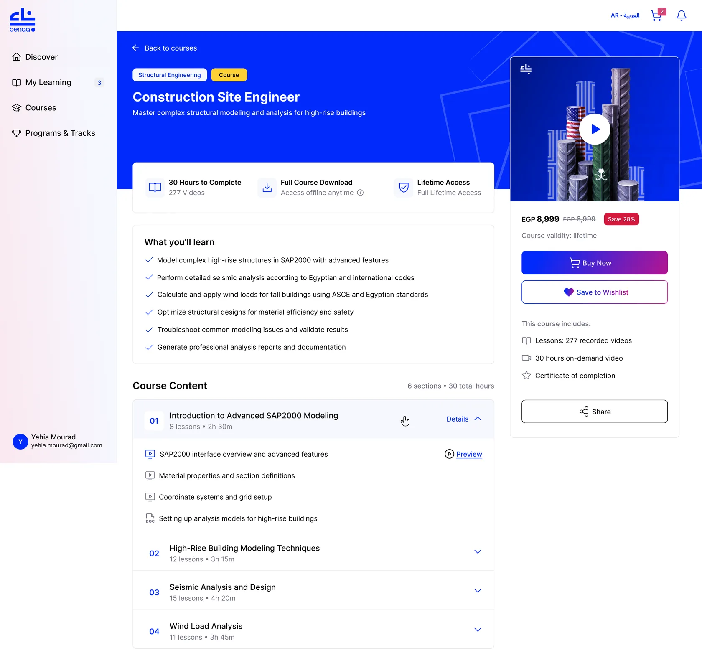
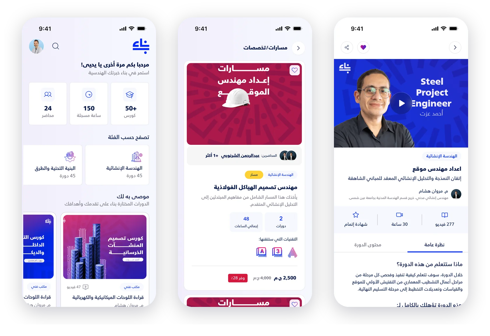
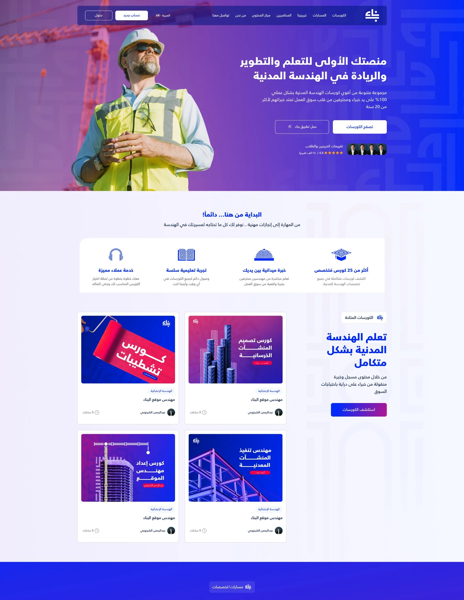
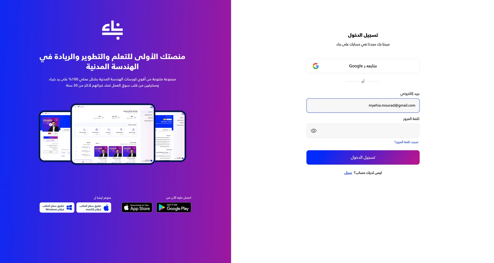

From one desktop app to a full learning platform
Benaa teaches civil engineers across Egypt and the Gulf. I was hired to design a desktop app for engineers on construction sites. The client liked it, and the project grew into the mobile app and the website too.
The short version
- Started with a desktop app for engineers who learn on construction sites with weak or no internet.
- The client was happy with it, so the scope grew to a mobile app and website in the same direction.
- Built offline in from the start: an Offline Library, download status on every lesson, and full-course download as a selling point.
- Grouped courses into career paths, so new learners get a plan instead of a catalog.
- Designed course pages that sell: preview, key facts, syllabus and a pinned buy button.
- Arabic-first on mobile and web, bilingual on desktop. Shipped on all three platforms.
Twelve years of teaching engineers
Benaa started as an offline academy for civil engineers. Over 12 years it grew into an online platform used by thousands of engineers in Egypt and the Gulf, with courses on structural design, site engineering, finishing works and software like SAP2000, AutoCAD and Revit.
Its learners range from fresh graduates to senior engineers. Many of them spend their days on construction sites, not at a desk.
A narrow brief that kept growing
The first brief was one product: a desktop app for engineers who work on site, where the internet is unreliable or missing. They needed to download courses and keep learning offline.
Once the client was happy with the desktop design, they asked me to redesign the mobile app and the website in the same direction. One app became three platforms that had to feel like one product.
- Desktop app
- Mobile app
- Website
Discovery through the people who teach
There was no formal user research. The brief came from working sessions with Benaa's team and their instructors, practicing engineers who teach these learners every day. These problems kept coming up:
Learning had to work where the signal doesn't.
50+ courses is a lot when you're early in your career.
Course pages had to answer that fast.
And learners move between the site, home and their phone, so progress had to follow them across devices.
Design for the site, not the desk
4A · OfflineOffline is a place, not a setting
The Offline Library has its own spot in the sidebar, separate from browsing, so downloaded content is always one click away. Each lesson shows whether it's downloaded, so you know what will play before you lose signal. And full-course download is sold on the course page itself: "Access offline anytime."
4B · DiscoverStart with your progress, not the catalog
Discover opens with what you've done: courses in progress, certificates earned and total learning time. A "Continue" card shows how far you are and how much time is left. Certificates download right from the home screen, which matters for engineers who need them for a CV or an employer.

A focused place to watch
While you watch, the sidebar collapses to icons and the course content sits beside the video, with download status on each lesson. Notes and reviews live in tabs under the player.


Same product, Arabic-first
5A · PathsA career plan instead of a pile of courses
Engineers don't want "a course". They want to become a site engineer or a steel structure designer. So courses are grouped into paths. Each path card shows the instructors, total hours, number of courses, the software you'll learn, and the bundle price against buying courses one by one.
5B · Course pageAnswer the buying questions fast
Video preview at the top. Videos, hours and certificate in one strip, then the instructor and their background. Overview and course content are split into tabs, so people who want the syllabus don't scroll past marketing copy. Price and the buy button stay pinned at the bottom.
5C · NavigationThree tabs around the learner
Discover, Courses and My Learning Journey. The home screen greets you by name and moves from overview to categories, recommendations and paths.

Keep the classroom
Benaa started in a classroom, and that's a big part of why people trust it. "Ask an expert" shows up across mobile, web and desktop as a direct line to a senior engineer.
5E · WebsiteSell the platform, and the apps
The website does marketing and learning. Paths, reviews, video success stories and corporate partners build trust, and every entry point, including sign-in, points to the mobile and desktop apps.


One visual language, three layouts
I built on Benaa's identity: the blue-to-magenta gradient and a pattern made from the logo's strokes. Primary actions, course covers and the "Ask an expert" card use it on every platform, while each layout fits its device: a sidebar on desktop, bottom tabs on mobile, long scrolling sections on the web.
Shipped on all three
The desktop app shipped on Windows and macOS, the mobile app on iOS and Android, and the website went live. It was a freelance project, so I don't have usage data after launch. What I can point to is that a one-app brief turned into the whole product because the first piece of work earned it.
Two things I'd fix next time
- Talk to learners directly. The instructors gave strong insight, but a few interviews with site engineers would have tested our assumptions about offline use.
- Build a design system early. I designed desktop first, then mobile and web. Shared components from day one would have made scaling faster and kept the platforms tighter.